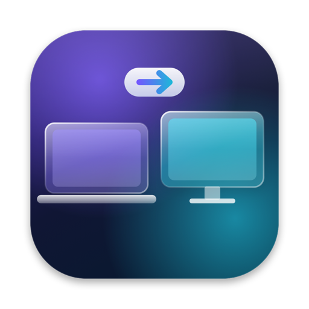

Knows each exact monitor
Every monitor reports its vendor, model and serial number (EDID) over the cable. ScreenSide remembers each one individually.

ScreenSide DownloadScreenSide remembers which monitor you plugged in and where you are, then puts it on the correct side of your MacBook. Home, office, meeting room. No more dragging displays around in System Settings.
ScreenSide lives quietly in your menu bar and does one job really well.
HDMI, DisplayPort, USB‑C or a dock. ScreenSide reads the monitor’s identity straight over the cable and notes where you are.
Left, right, above or below, aligned top, centre or bottom. Choose it from the menu bar, for this monitor, this model, or this place.
Every time you plug in or wake your Mac, your screens snap into the right arrangement instantly. You never open Displays settings again.
Everything you need to stop rearranging displays, and nothing you don’t.
Every monitor reports its vendor, model and serial number (EDID) over the cable. ScreenSide remembers each one individually.
Tie rules to a place: home, office, a meeting room. The same monitor can sit on different sides in different places.
Your arrangement is applied the moment a display connects or your Mac wakes from sleep.
Two monitors on the same side? They stack neatly. Align top, centre or bottom to match your desk.
Exact monitor beats same model beats any display. Adding a place raises the priority. It just does what you meant.
ScreenSide arranges displays directly through macOS. No Accessibility access to grant, no scripting your mouse around.
Written in SwiftUI with the Liquid Glass design of macOS 26 Tahoe, and runs on macOS 14 Sonoma and later. A tiny universal app for Apple silicon and Intel that sits quietly in your menu bar.
MIT licensed. Read every line, build it yourself, send a pull request.
ScreenSide combines what’s on the other end of the cable with where you are, so even identical monitors in different rooms get the right treatment.
Vendor, model and serial number, read from the display’s EDID over HDMI, DisplayPort or USB‑C.
Wi‑Fi or Ethernet / dock, identified by your router’s hardware address. Works without location permission.
Turn on Location Services for extra certainty. It’s entirely optional and never leaves your Mac.
Monitors with no serial number? Pair the model with a place and you’re covered.
ScreenSide makes no network calls. Ever. Your monitors, places and rules are stored locally and stay that way.
xattr -dr com.apple.quarantine /Applications/ScreenSide.appClone the repo and let the build script compile and install it to Applications for you.
git clone https://github.com/AJB93/ScreenSide
cd ScreenSide
./build.sh --installRequires macOS 14 Sonoma or later · Universal (Apple silicon & Intel)
Partly, and often that’s enough. macOS saves a layout for each combination of displays it has seen. If you use one monitor that reports its own serial number, on a direct cable, macOS will usually put it back where you left it.
ScreenSide is for where that memory falls short:
• The same model in different places. macOS can’t tell your home and office monitors apart if they’re identical, and it has no idea where you are. ScreenSide can tie a side to a place.
• Screens it has never seen. Meeting rooms and hot desks always get the macOS default. ScreenSide can say “any other display here goes on the left”.
• Docks, adapters and forgetting. Some hubs change how a monitor identifies itself, and arrangements sometimes get lost after updates or sleep. ScreenSide re-applies your choice every time the screen connects.
If none of that matches your setup, you may not need ScreenSide, and that’s fine.
ScreenSide is free and isn’t notarized by Apple, so Gatekeeper warns you the first time. Right‑click (or Control‑click) ScreenSide in Applications and choose Open, then confirm. You only need to do this once.
Alternatively, remove the quarantine flag in Terminal: xattr -dr com.apple.quarantine /Applications/ScreenSide.app
Yes. Monitors connected through a dock, hub or USB‑C / Thunderbolt cable still report their EDID, so ScreenSide recognises them just the same. A dock’s Ethernet port can even help identify the place you’re in.
Each monitor gets its own rule. If several monitors are set to the same side, ScreenSide stacks them neatly next to each other, aligned top, centre or bottom as you prefer.
Then there’s nothing to do. With the lid closed there’s no built‑in screen to arrange around, so ScreenSide simply stays out of the way. Open the lid and it puts everything back in its place.
No. Places can be recognised purely by the network you’re connected to, using the router’s hardware address. Location Services is an optional extra, and nothing ever leaves your Mac.
Yes. ScreenSide is open source under the MIT license. No subscriptions, no upsells, no accounts.
Download ScreenSide and let your Mac remember where everything goes.